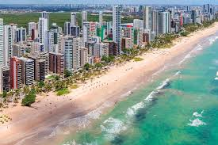
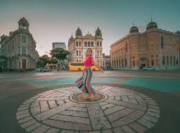
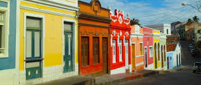
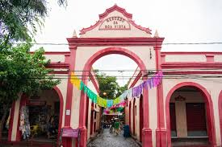
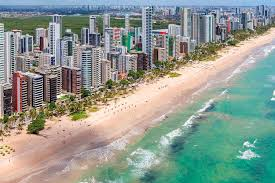
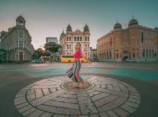
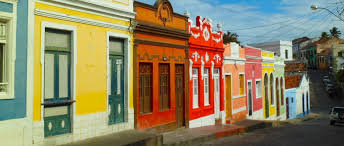
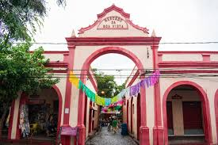

Ponto Turístico 1
Descrição do ponto turístico 1.
Ponto Turístico 2
Descrição do ponto turístico 2.
Ponto Turístico 3
Descrição do ponto turístico 3.
Ponto Turístico 4
Descrição do ponto turístico 4.
Descrição do ponto turístico 1.
Descrição do ponto turístico 2.
Descrição do ponto turístico 3.
Descrição do ponto turístico 4.
